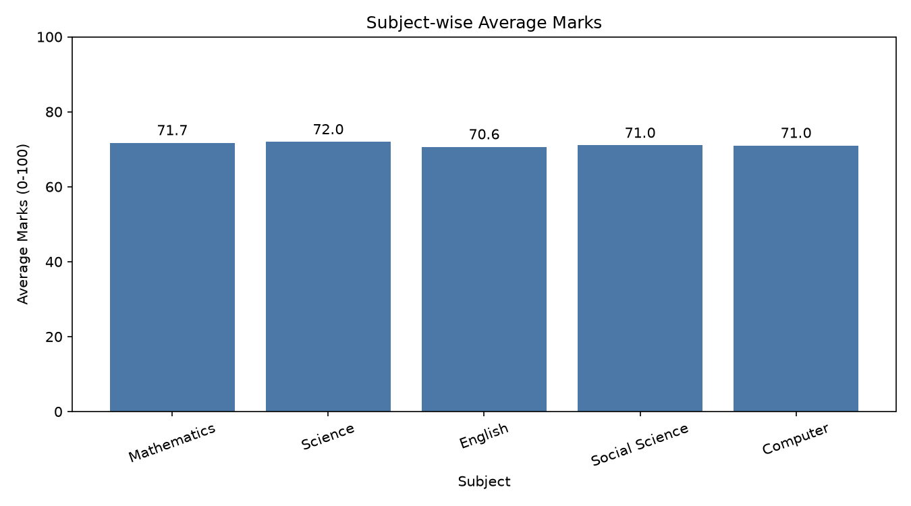
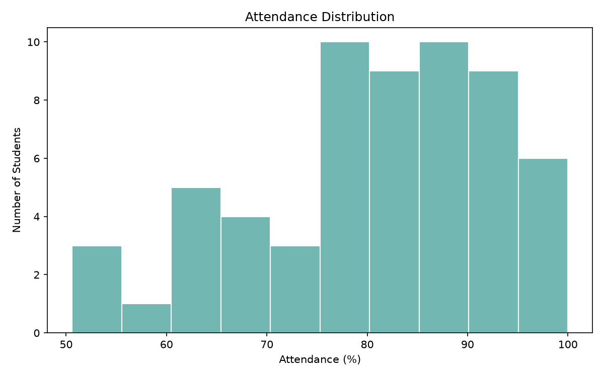
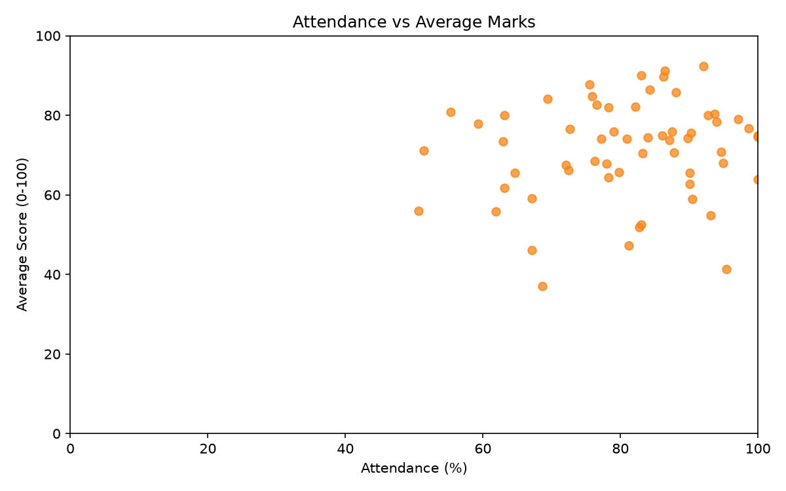
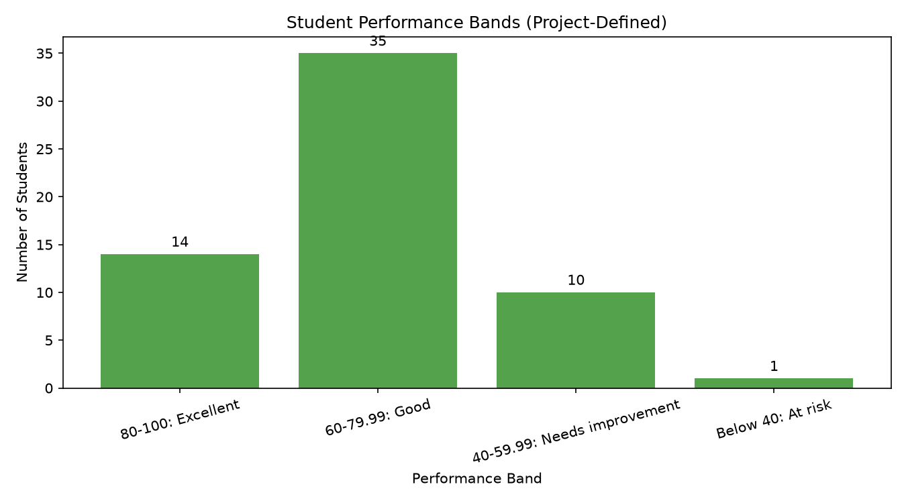
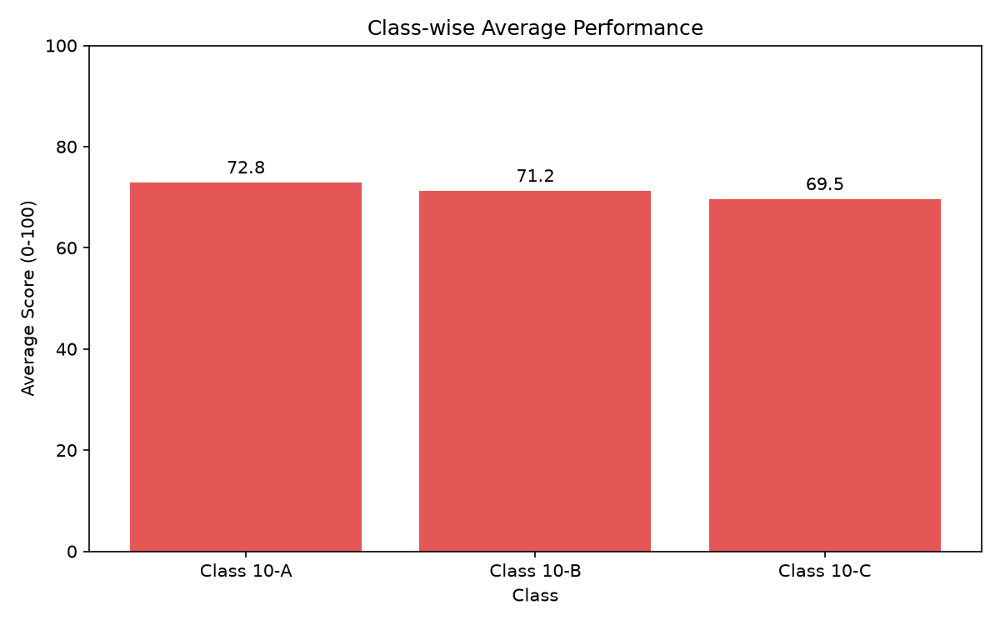

Top Subject
Science
Highest average score: 71.96.
SQL & Data Analytics Portfolio Project
An end-to-end analysis of a clearly labelled synthetic student dataset covering marks, attendance, class performance, data validation, and visual reporting.
Data note: Synthetic, fictional dataset for portfolio demonstration only. Findings are not real-world facts.
Executed Findings
Results below are computed from the included synthetic dataset and exported analysis pipeline.
Science
Highest average score: 71.96.
English
Lowest average score: 70.62.
26.67%
16 students below 75% attendance threshold.
0.1471
Weak positive Pearson correlation; not causation.
| Performance Band | Threshold | Students | Share |
|---|---|---|---|
| Excellent | 80-100 | 14 | 23.33% |
| Good | 60-79.99 | 35 | 58.33% |
| Needs improvement | 40-59.99 | 10 | 16.67% |
| At risk | Below 40 | 1 | 1.67% |
Bands are project-defined, transparent thresholds — not official academic standards.
Visual Reporting





Technical Workflow
python -m venv .venv
.venv\Scripts\Activate.ps1
pip install -r requirements.txt
$env:PYTHONPATH="src"
python src/run_analysis.pyFor MySQL: run sql/schema.sql, import data/raw/student_performance.csv, then run sql/analysis_queries.sql. Keep credentials in .env.
Interview Ready
Demonstrates the core data analyst workflow: data validation, SQL querying, Python EDA, visualization, and communicating findings with limitations.
Add a larger real/public dataset with provenance, automated tests/CI, a small dashboard, and statistical tests for attendance-performance relationships.